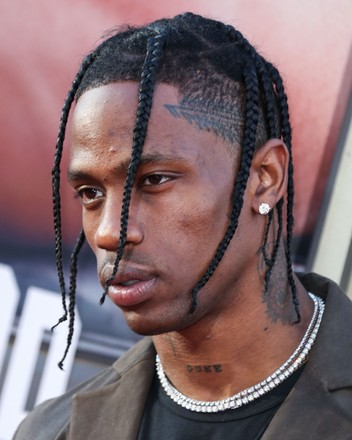

.png)
Artist hub
Artist hub

Travis Scott, whose real name is Jacques Bermon Webster II is an American rapper, singer, songwriter, and
producer
born on April 30, 1991, in Houston. He graduated from
Elkins High School and attended the University of Texas at San
Antonio before dropping out in
his sophomore year to pursue music full-time. He began his music career by producing beats
and later moved to Los Angeles, where he gained recognition working with Kanye West. Travis Scott rose to fame with projects
like Rodeo and achieved global success with his album Astroworld, which featured hit songs such as “Sicko Mode.”He later released
Utopia in 2023, showing his continued growth and innovation in music. Beyond his music career, he has made a major
impact in fashion
and business through collaborations with global brands.He has won several BET Hip Hop
Awards, including honors like Best Live Performer
and Best Collaboration, and achieved success at the
Billboard Music Awards, where his hit “Sicko Mode” earned Top Streaming Song (Audio).
At
the MTV Video Music Awards, he won Best Hip-Hop Video for “Franchise,” and he also received international recognition ,
at the Latin
Grammy Awards, winning Best Rap/Hip-Hop Song for “TKN” with Rosalía. Despite his
success, he has yet to win a Grammy Awards, although he has
earned multiple nominations, including Best Rap Album for Astroworld.